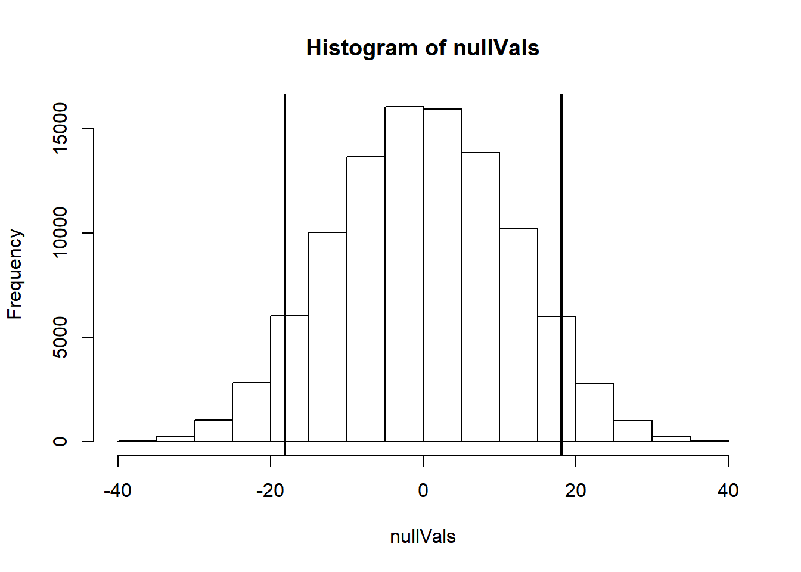
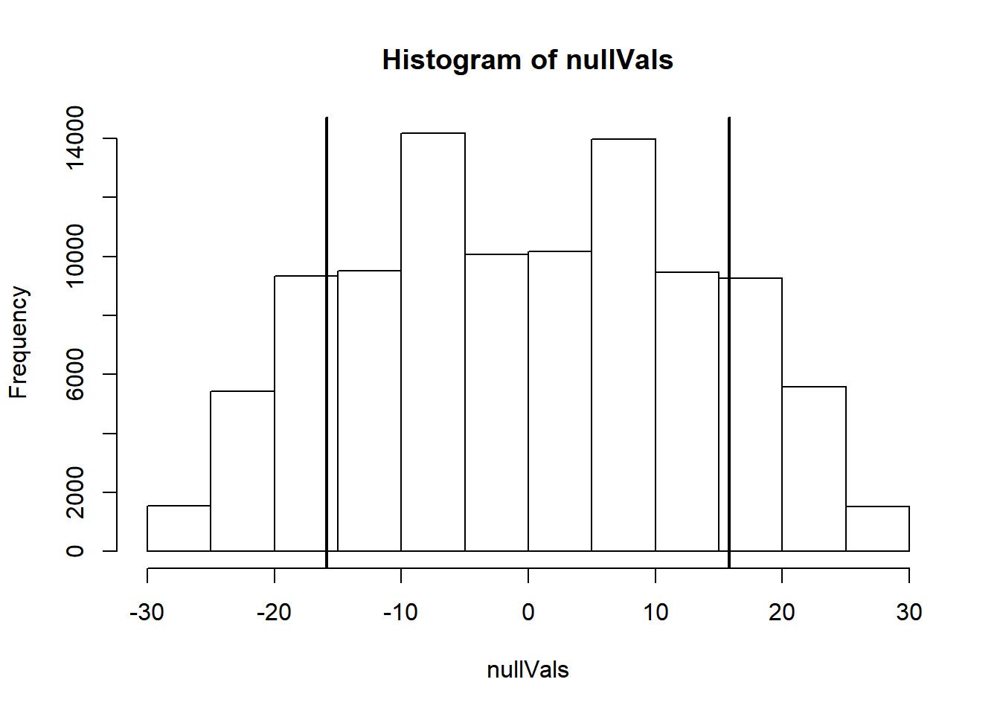

# THIS DOCUMENT INCLUDES THE SOLUTION
# regenerate with soln: FALSE to create the
# HW assignment for the students
# The point of this homework is to get some practice using the permutation
# test on an actual data set. We have the apply the test to the mean and median
# also, notice that the data set is very small making it harder to justify
# using the t-test.For this home work you will be using data from an experiment published in Ecosphere to examine effect sizes and tests (Steel et al. 2012). Eggs from Chinook Salmon were incubated in tanks that were exposed to different temperatures over time. The y variable is the number of degree days until 125 of 150 Chinook salmon fry volitionally emerged. Each treatment had 8 replicates. The treatments that we will look at are:
Enter the data using the following code.
fivec <- c(1156.2, 1145.8, 1156.2, 1176.6, 1196.8, 1116.3, 1156.2, 1135.6)
doubledaily <- c(1184.8, 1193.2, 1176.3, 1201.5, 1159.4, 1167.8, 1150.8, 1150.8)Here lets define the effect size as the difference between the fivec and doubledaily treatments.
mean5 <- mean(fivec)
meanDouble <- mean(doubledaily)
diff.mean <- mean5-meanDoubleUse a permutation test to test the hypothesis that there is no difference between the mean degree days for the two temperature treatments.
What is the p-value for a two sided test?
Describe the populations we are comparing.
Do you think there is a difference between these two populations?
Here's some code to get you started. Hint: this set up should look a lot like the lab.
days <- c(fivec,doubledaily)
treatment <- rep(c("fivec","double"),c(8,8))### SOLUTION ###
# A histogram of the null distribution with +/- observed difference.
permutations <- 100000
nullVals <- rep(NA,permutations)
for(i in 1:permutations){
treatPerm <- sample(treatment, replace=FALSE)
nullVals[i] <- mean(days[treatPerm=="fivec"])-mean(days[treatPerm=="double"])
}
hist(nullVals)
obsVal <- mean(days[treatment=="fivec"])-mean(days[treatment=="double"])
absVal <- abs(obsVal)
abline(v=c(-obsVal,obsVal), col="black", lwd=2)
### SOLUTION ###
# 1) The p-value is
sum(nullVals < -absVal | nullVals >= absVal)/permutations## [1] 0.12359# 2) Instead of having 8 replicates in each temperature treatment, you would have infinite replicates.
# 3) It's hard to say. There's over a 10% chance that you could get two samples like this if there was no difference.### SOLUTION ###
# A histogram of the null distribution with +/- observed difference.
permutations <- 100000
nullVals <- rep(NA,permutations)
for(i in 1:permutations){
treatPerm <- sample(treatment, replace=FALSE)
nullVals[i] <- median(days[treatPerm=="fivec"])-median(days[treatPerm=="double"])
}
hist(nullVals)
obsVal <- median(days[treatment=="fivec"])-median(days[treatment=="double"])
absVal <- abs(obsVal)
abline(v=c(-obsVal,obsVal), col="black", lwd=2)
### SOLUTION ###
# the p-value
sum(nullVals < -absVal | nullVals >= absVal)/permutations## [1] 0.28725# So there is even less evidence for a difference between the medians.Steel, E.A., Tillotson, A., Larsen, D.A., Fullerton, A.H., Denton, K.P. and Beckman, B.R., 2012. Beyond the mean: the role of variability in predicting ecological effects of stream temperature on salmon. Ecosphere, 3(11), pp.1-11.